About

Photo by RJ Capak
A new dimension in dance
As the creator of The 4th-Dimension Partnership™, aka The 4DP Dance System, Ms. Diaz introduces a new dimension in ballroom dancing rooted in the Physical, Social and Emotional dimensions, which lead to a Higher Consciousness. Her system elevates shared-axis technique to build dynamic, inclusive and respectful partnerships on and off the dance floor. She was recently featured as keynote speaker at LIFCON 2026, hosted by Dancing With The Stars celebrity Louis van Amstel. She was acknowledged by Dream Lawyers as an Inspired Woman Making an Impact in the World using her intellectual property. She brought her revolutionary 4DP System Technique to the Off-Broadway play “Mr. Puppy The Musical,” and she taught her 4DP Dance System at Wesleyan University. Keeping current with her dance career, she is touring, lecturing and adjudicating as an accomplished Fellow in all styles of dance.
With a career that spans decades and continents, Ms. Diaz and her former dance partner Richard were the first U.S. World Mambo Champions, three-time U.S. Ten Dance Representatives and eleven-time undefeated Basic Latin Champions. She has toured the world in numerous stage, screen and TV productions as a performer and choreographer, most memorably as the Countess in Grand Hotel and with The American Ballroom Theater. Ms. Diaz is also a master educator, having taught at NYU, Ballet Hispanico, The Joffrey Ballet School and Gelsey Kirkland Ballet Academy.
As one of the original organizers of The United States Dance Congress, she received the Unity Ball Lifetime Achievement Award, sponsored by the United Nations, for her contribution to dance. She is also a contributing guest columnist for various dance publications.
She is the founder of Ballroomology.com, which honors ballroom’s history and legacy, and BallroomBarks.org, her nonprofit for animal advocacy. She also has a personal website, BonnieDiaz.com, and is building her YouTube channel, BonnieDiazDance.
In her book The 4th-Dimension Partnership™, now available on Amazon, Ms. Diaz shares the method and message behind the 4DP System. It invites dancers of all styles and identities to move with deeper presence and spiritual awareness, while being kind to each other.
Ms. Diaz is more than a champion: she’s a futurist and visionary.
Meet Bonnie
Dance reels
Championship and performance footage from four decades.
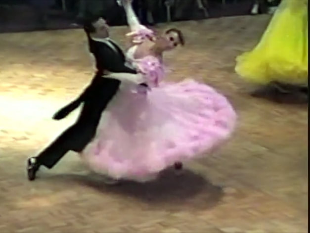
Dance Reel 1
Compilation, circa late 1980s to early 1990s
Watch on Vimeo ↗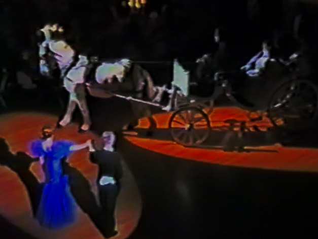
Dance Reel 2
Viennese Opera Ball at the Waldorf Astoria, NYC, January 26, 1990
Watch on Vimeo ↗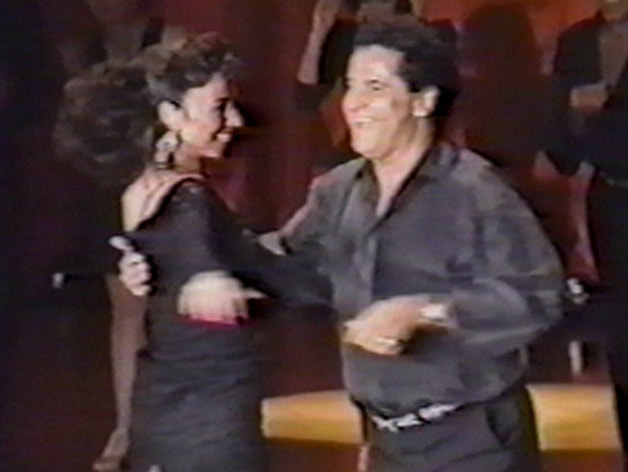
Dance Reel 3
Mambo Mania with Bob Medeiros, circa 1992
Watch on Vimeo ↗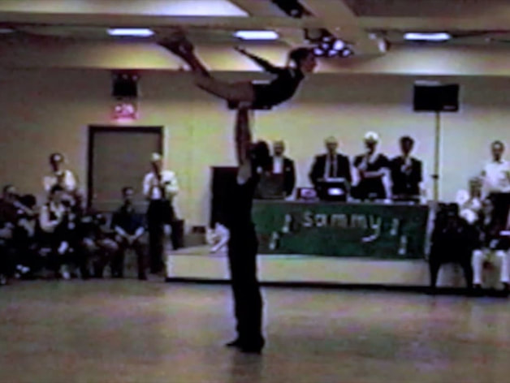
Dance Reel 4
Adagio, “When A Man Loves A Woman,” 1994
Watch on Vimeo ↗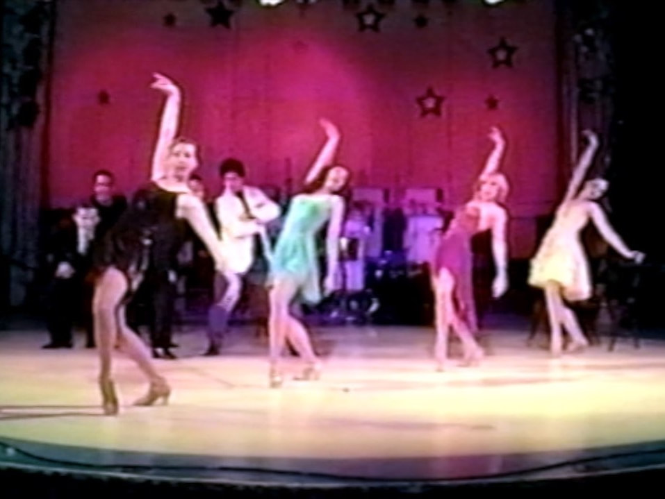
Dance Reel 5
Dancer & choreographer, circa 1999
Watch on Vimeo ↗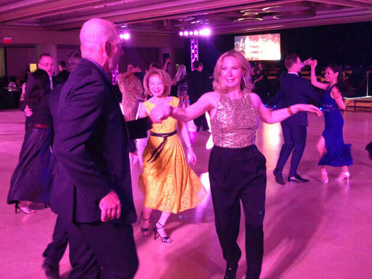
Empire Dance Championship
Dancing with Chuck Fetta, Marriott Marquis, August 2, 2018
Watch on Vimeo ↗A career in photos
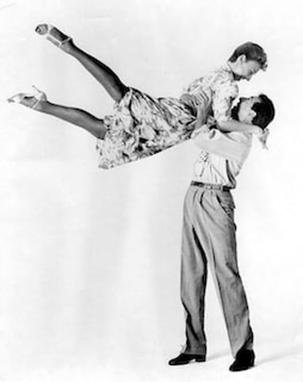
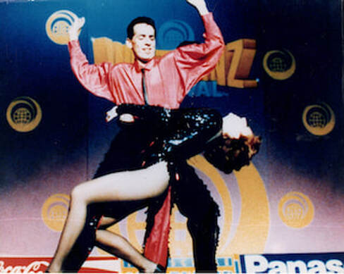
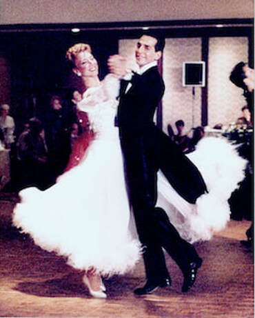
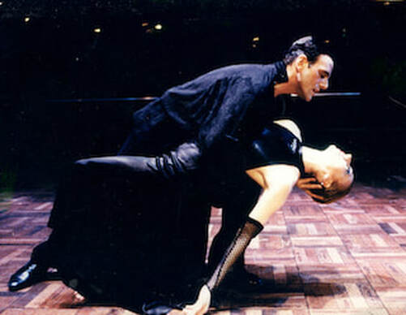
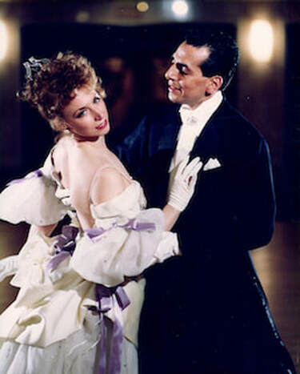
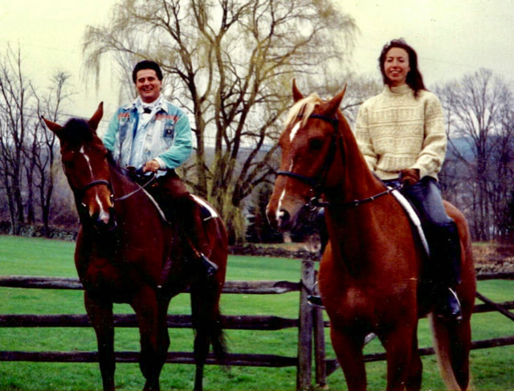
Accolades
- 01
Creator of the 4DP Dance System
- 02
Author of The 4th-Dimension Partnership: A New Solution for a World Out of Balance
- 03
First U.S. World Mambo Champion (with partner Richard)
- 04
Unity Ball Lifetime Achievement Award for her contributions to dance
- 05
Three-Time U.S. Representative (Ten Dance)
- 06
Former faculty, guest teacher and choreographer at New York University, The Joffrey Ballet School, Ballet Hispanico and Gelsey Kirkland Ballet Academy
- 07
Keynote Speaker, The Inter-art Development Series: Creative Women NY
- 08
Featured Dancer: Disney’s Enchanted
Dance & choreography
- Keynote Speaker: LIFCON 2026, LaBlast Fitness (“The 4th Dimension: Restoring Balance & Connection”)
- 4DP Consultant: Mambo and Rumba Seminars at Wesleyan University
- 4DP Consultant: Samba Workshop for Mr. Puppy – The Musical
- Choreographer: Ballet Hispanico Spring Gala (NYC)
- Associate Choreographer: PALLADIUM NIGHTS (Lincoln Center, The Joyce Theater)
- Associate Choreographer: DIOSA (Dramatists Guild NYC, Vassar College)
- Associate Choreographer: SYNCOPATION (Long Wharf Theatre, New Haven, CT)
- Co-Host: LUIGI: A Benefit-Tribute Concert (Dec. 2015, Symphony Space, NYC)
- Co-Founder and Artistic Director: Ballroom New York, the first independent cooperative for ballroom dancers and teachers
- Eleven-Time Undefeated Champion (Basic Latin)
- New England and East Coast Champion (Hustle); East Coast Champion (Baton)
- United States Professional Rising Star Ballroom Champions
- Featured Dancer: 1996 Olympics with Wynton Marsalis
- Featured Dancer: Tito Puente and Celia Cruz at Madison Square Garden
- Featured Dancer: Valentine’s special on Live with Regis and Kathie Lee
- Featured Dancer: Woody Allen’s Everyone Says I Love You
- Featured Dancer: Viennese Opera Ball (Waldorf Astoria, NYC)
- Featured Dancer: American Ballroom Theater, with performances at the Kennedy Center, BAM, The Joyce Theater, Jacob’s Pillow and the PBS special Salute to Gershwin
- The Countess in GRAND HOTEL (Walnut Street Theatre; Pittsburgh Civic Light Opera)
Education & training
- A.S. Degree in Recreational Leadership, Massachusetts Bay Community College
- Musical Theatre Performance (Elynn Diamond)
- Daurice School of Performing Arts (Boston, Massachusetts)
- Jazz & Tap: Phil Black, JoJo, Luigi, Frank Hatchett
- Classical Ballet: Madame Darvash
- Latin Dance Coach: Bob Medeiros
- Ballroom Dance Coach: Bill Davies
- Certified Fellow in All Styles of Dance
- USA Dance Sport Championship Adjudicator
- NADTA Member
Actress, model & member of SAG-AFTRA®
- Acting: Rob Sedgwick and Cathy Russell, Sedgwick Russell Acting Studio
- TV commercials: Angela Mickey and Liz Lewis Casting, NY Casting
- Voiceovers: Philip Galinsky, NY Casting
Miscellaneous
- Author of A New Dimension in Ballroom Dancing: The 4DP System – The Shared Axis Style and Technique
- Certified Master Instructor: Yoga, Pilates and Fitness
- Certified in Pet First Aid and CPR
- Featured in Vogue, Italian Vogue and People magazine
- Featured yoga magazine spread: Body and Soul magazine
- Co-Publisher: Ability – Ballroom Dance Journal
- Author of the eBook Ballroomology, The Study of Ballroom Dance: Insights From A Former World Champion
- Author of the eBook Role of Vitamin D3 in Bone Health – Impact of Biofield Energy Healing Treatment
- Author of the eBook The Anti-Aging Impact on the Skin by Using a Consciousness Energy Healing Based Herbomineral Formulation
- Certified Spiritual Healer, Universal Life Church Ministries